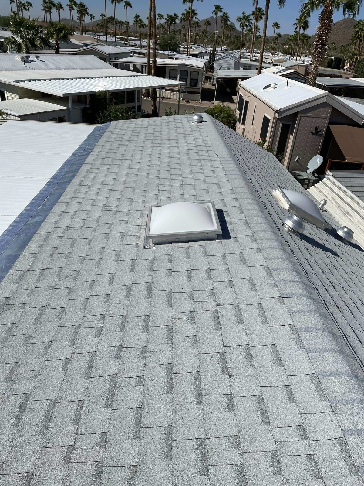

Skylights · Tucson, AZ
Skylight Installation & Replacement in Tucson
Get all that natural light without the leaks. We're roofers, so we install and replace skylights and solar tubes with real roofing-grade flashing, which is how they brighten the place up and still stay watertight.
- Skylights & solar tubes
- Leak-free flashing
- Replacement & repair
- Energy-efficient glazing
Light Done Right
Skylights that actually stay dry
Most skylight leaks aren't really the skylight's fault, they're flashing that wasn't done right. A skylight is just a hole in your roof, and it's got to be tied into the roofing system the right way or it's going to leak.
Since we're roofers first, we set and replace skylights and solar tubes with the underlayment and flashing done properly, so you get the light without ever thinking about water.
- Roofing-grade flashing & sealing
- Skylights & tubular daylighting
- Replacement of failed units
- Energy-efficient, UV-rated glazing
Skylights
Fixed and vented skylights that flood rooms with natural daylight.
Solar Tubes
Tubular daylighting for hallways, baths and closets where a skylight won't fit.
Leak-Free Install
Proper flashing integration so your new skylight stays watertight.
Replace & Repair
Leaking or foggy skylight? We'll fix it
Older skylights start to leak, fog up between the panes, or yellow and crack in the desert sun. Swapping the old unit out and re-flashing it right puts an end to it for good.
We replace shot skylights with newer, energy-efficient units, and if the skylight itself is still fine we'll just redo the flashing.
- Replace foggy or cracked units
- Re-flash leaking skylights
- Energy-efficient, low-E glazing
- Solar-tube alternatives where it fits
Related Guides
Skylight & flat roof guides
Most skylight leaks come down to how the opening was flashed into the roof. These go further into replacement and sealing penetrations on flat roofs.
Skylight replacement on flat roofs in Tucson Sealing skylights and other flat roof penetrations Flat roof maintenance around skylights, vents and drains
How It Works
Our Roofing Process
Consultation
We assess placement, sizing and the best unit for the room and roof.
Quote
A clear written estimate for the skylight or solar tube and proper flashing.
Installation
Clean opening, watertight flashing integration and interior finishing.
Inspection
We verify the watertight seal and a clean finish, inside and out.
FAQ
Roofing Questions, Answered
Still wondering about something? Call us at 520-753-1758 — straight answers, no pressure.
Ask Us DirectlyWhy do skylights leak?
Almost always the flashing, not the skylight itself. It's a hole in the roof, so it's got to be tied into the roofing with the right underlayment and flashing. Being roofers, that's the part we get right.
Can you replace my old skylight?
Yep. We pull foggy, cracked or leaking skylights and put in newer energy-efficient ones, then re-flash them right so they stay watertight.
What's a solar tube?
It's a tubular daylight, basically a small reflective tube that pipes sunlight down from the roof into spots like hallways, bathrooms and closets where a full skylight won't fit.
Are skylights energy-efficient in the desert?
They can be. Newer skylights with low-E, UV-rated glass let the light in while holding the heat back. Pick the right unit and put it in the right spot and they stay efficient even in our sun.
Do you install skylights during a roof replacement?
Yep, and honestly that's the best time to do it. The roof's already open, so we can tie the flashing in perfectly and it's less work overall.
Want more natural light?
Leak-free skylights and solar tubes, put in by actual roofers. Ask us for a free skylight estimate.
Let's Talk
Let's Take a Look at Your Roof
Tell me what's going on up there — a leak, storm damage, an old roof that's seen better days, or a full replacement — and we'll get you on the books for a free inspection.